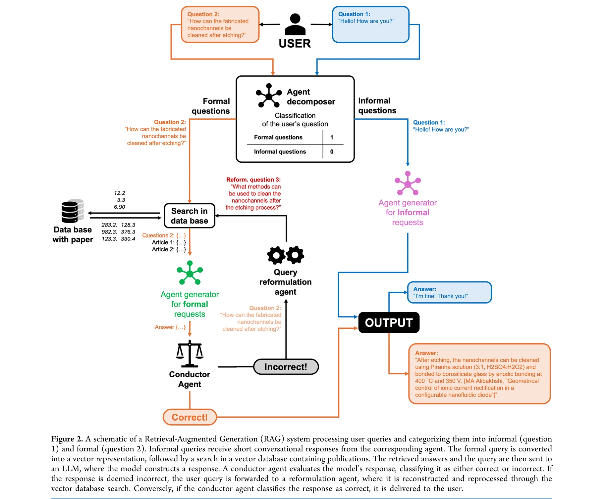
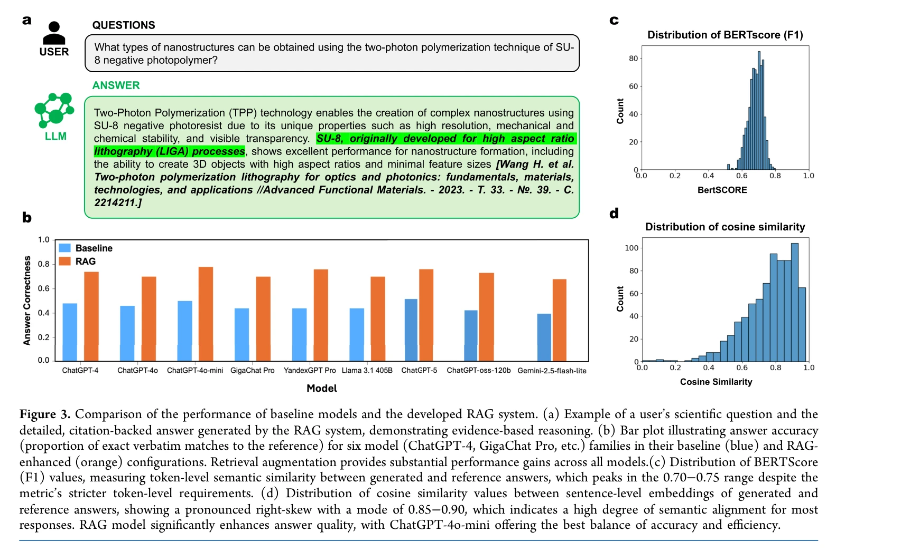
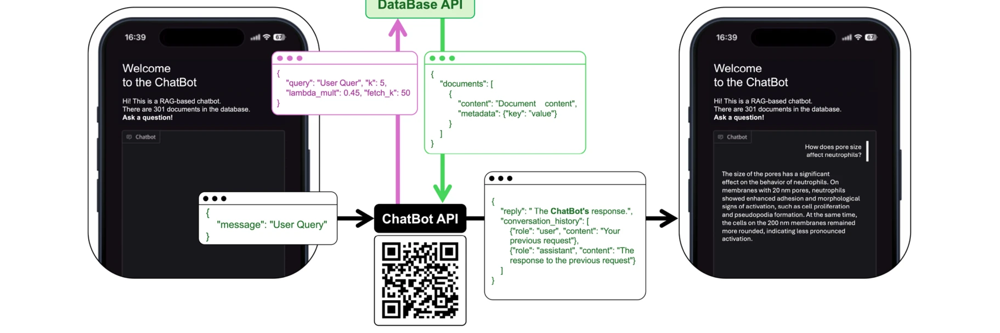

저자: Nikita A. Krotkov, Dmitrii A. Sbytov, Anna A. Chakhoyan, Polina I. Kornienko, Anna A. Starikova, Maxim G. Stepanov, Anastasiia O. Piven, Timur A. Aliev, Tetiana Orlova, Mushegh S. Rafayelyan, Ekaterina V. Skorb | 날짜: 2025-10-27 | DOI: 10.1021/acs.jcim.5c01897

Figure 2. A schematic of a Retrieval-Augmented Generation (RAG) system processing user queries and categorizing them int
이 연구는 Retrieval-Augmented Generation (RAG) 시스템과 LLM을 통합하여 나노구조 재료(특히 two-photon polymerization으로 제조된)의 설계를 자동화하고, 광대한 과학 문헌 데이터베이스에서 정보를 추출·분석하는 에이전트 기반 플랫폼을 제안한다.

Figure 3 provides a comprehensive evaluation of baseline

Figure 4. Architecture and workflow of the microservice-based RAG web application. The diagram illustrates the complete
총평: 이 연구는 RAG와 LLM을 활용하여 나노재료 설계 분야의 문헌 분석을 효과적으로 자동화하는 혁신적 플랫폼을 제시하며, 높은 정확도(0.82 cosine similarity, 0.81 precision)와 직관적 인터페이스로 연구 생산성을 크게 향상시킨다. 다만 domain-specific 용어 커버리지와 일반화 능력 개선이 필요하고, 향후 MatSci-LLM 개발과 실험실 자동화 통합이 중요한 과제이다.